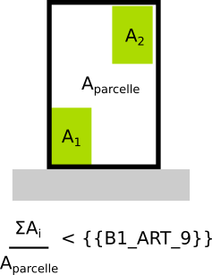

IAUIDF-006 - Coefficient d'emprise au sol maximum
Modèle de phrase
Le coefficient d'emprise au sol (rapport entre surface bâtie et surface de la parcelle) est limité à .
Paramètres
B1_ART_9
Coefficient d’emprise au sol maximum.
Ratio compris en 0 et 1.
Remarque : Si valeur exprimée en %, convertir en ratio. Ex : 5%= 5/100 = 0,05 ; 85%= 85/100 = 0.85
Explications
indique le ratio maximal entre la surface bâtie et la surface de la parcelle.

Implémentation
La vérificationdu ratio s'effectue dans la classe PredicateIAUIDF et seul le coefficient de la première bande est pris en compte.